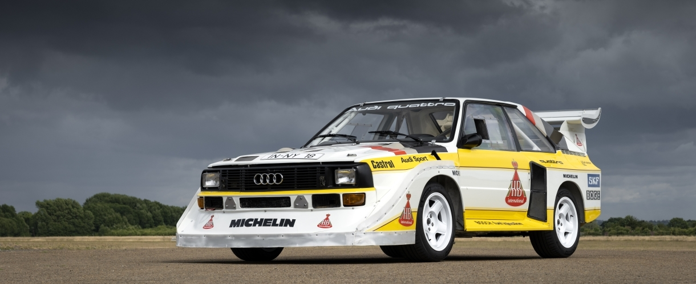
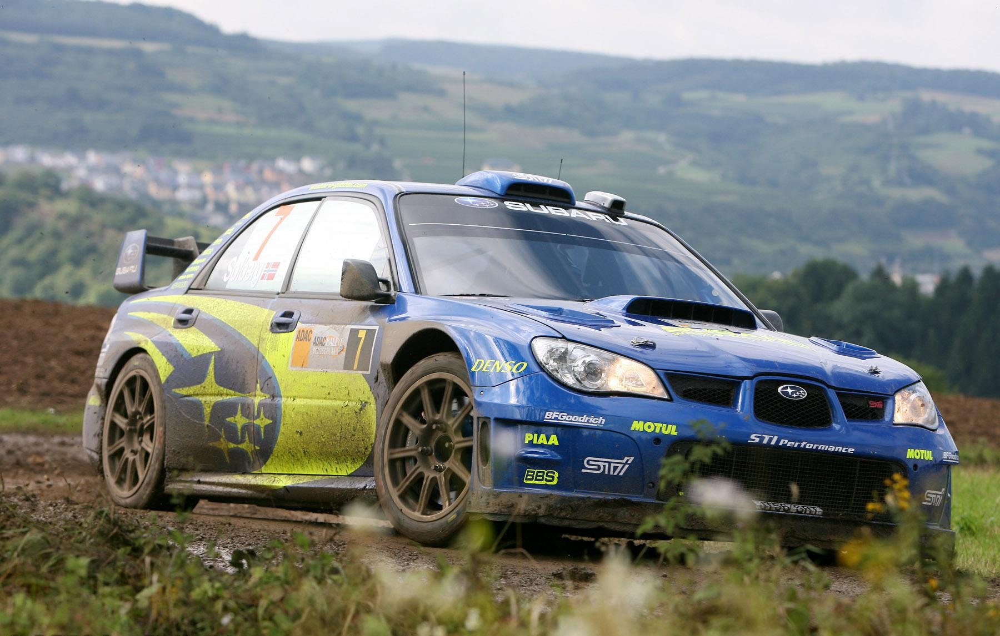
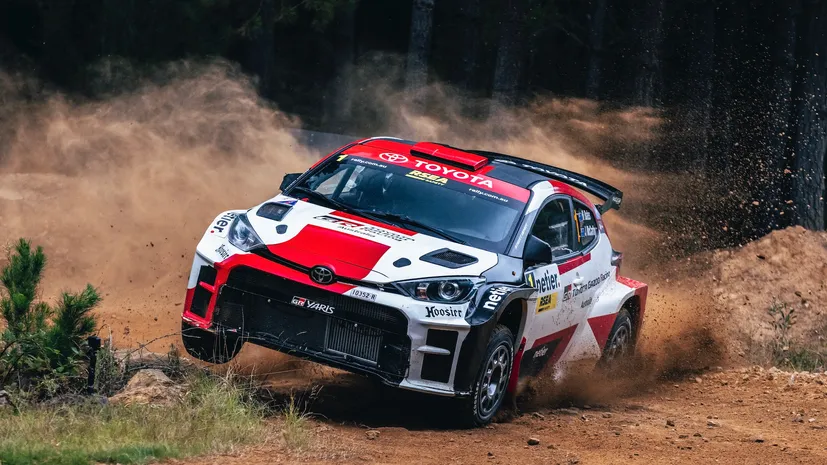

From Group B thunder to modern hybrid heroes — these cars helped shape WRC history with distinctive engineering, unforgettable moments, and legendary liveries.

Audi Sport Quattro
The Group B icon: short wheelbase, brutal turbocharged power and a lightweight shell made the Sport Quattro a terrifyingly fast car on loose and twisty stages. Its quattro all-wheel drive changed rally performance forever.
Era: 1980s Group B
Characteristic: Turbo power, advanced AWD

Subaru Impreza 1990s–2000s
Synonymous with Subaru's rally legacy: boxer engine, symmetrical AWD, and iconic blue-and-gold livery. The Impreza delivered consistency and traction that dominated loose gravel and snowy events.
Era: 1990s–2000s
Characteristic: Durable rally setup, legendary team livery

Toyota GR Yaris
A modern pocket rocket built with rally DNA: compact, light, and featuring advanced chassis and engine tech. The GR Yaris demonstrates how homologation specials bring rally tech to road cars.